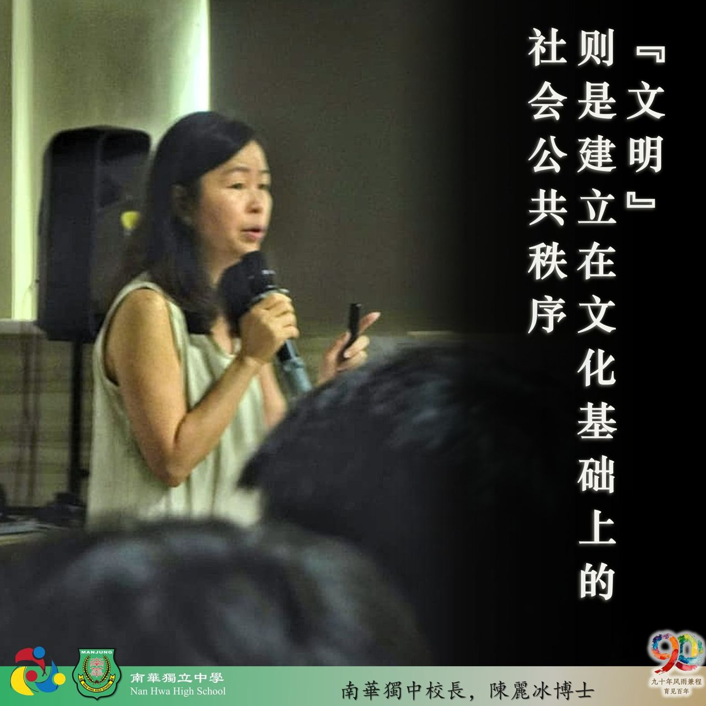
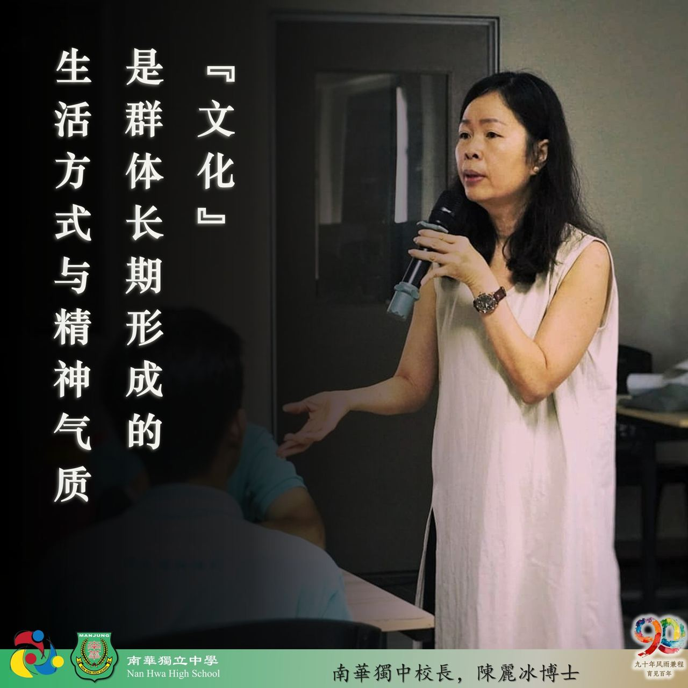

第四届学生领袖训练营·承光篇
第四届学生领袖训练营·承光篇
专题讲座系列报导之四
校长陈丽冰博士：从独中精神看文化自信与公共责任
南华独中的孩子刚捧着从安焕然教授播撒的一段两百年华教史的文化种子，校长陈丽冰博士在次日的讲座中即刻搭建了一个未来沙盒世界：在2050年全国独中乃至于华教正面临着存亡之际。陈校长通过思辨思修与极限生存沙盘模拟，引导全场未来青年领袖解构自己最贴身的文化底蕴，直面历史与未来的公共担当——专题讲座《从独中精神看文化自信与公共责任》的思辨之旅从此展开。
讲座开篇，陈丽冰校长首先确立了领导者“才德兼备、德大于才”的范式，并引述市井俗语“流氓不可怕，可怕的是流氓有文化”，以此厘清文化、文明与公共责任的边界。
陈校长指出，“文化”是群体长期形成的生活方式与精神气质，如校本茶文化课程、日常使用筷子及民族服装，它是一切“有价值的日常与习惯”，核心回答“我是谁，我从哪里来”；“文明”则是建立在文化基础上的社会公共秩序，如饭后自觉抹桌、公交主动让座。而公共责任则源于“自我的觉醒与自觉”，是不需他人紧盯、自愿维护学校与社会秩序的意识。
讲座中，陈校长展示了一幅吉兰丹独中生在校外筹款时被带入警察局的纪实图片，并引入一则社评质问：“2026年了，为何还需要学生走上街头募款？”
以此为切入点，讲座打破了校园的温室语境。陈校长指出，街头募捐绝非单纯因为学校缺钱或缺乏制度化补贴，其深层教育价值在于让学生走向街头，亲自去体验人情冷暖、冷暖自知，从而感知“当下拥有的一切资源都并非理所当然”。
沙盘模拟2050：华校危局中的沉重抉择
在沙盘模拟环节，讲座将时空推演至“公元2050年全球AI实时翻译全面普及”的极端情境。在技术强势冲击下，大马华文学校面临大量关闭的危机。全场营员被赋予“最后一批文明守护者”的沉重身份，必须在母语、华文、独立思考、民族文化、社群责任等文明特征中做选择。
学生在抉择中产生了激烈的价值冲突：剔除华文则割裂了文字背后的深沉文化，放弃独立思考则意味着全面被AI操控。营员们坦言：“很难做抉择，文明的价值原来是会互相冲突的。”
唯有民族根脉与文化方能回答“我是谁”
陈丽冰校长在结语中强调，这场沙盘推演的本质，是撕开技术时代一切皆可被取代的表象，确证不可退让的底线。文化最终回答的是“我是谁”。当时代不断宣称翻译和知识都能被算法取代时，青年必须通过独立思考确知自己从哪里来，并自发守护那些关乎民族风骨、绝不可被外力剥夺的精神资产。
如今2026年，而眼前的未来青年领袖，已经开始思索要如何守护与建设自己的“文明与文化”之路。

